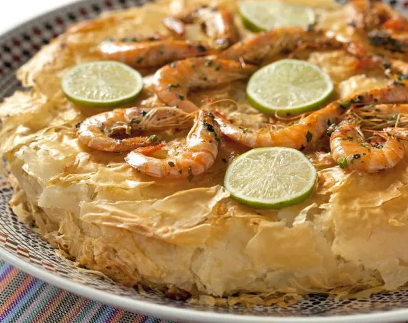

Home
Moroccan Seafood Bastilla

Served on special events, like weddings, bastila is the ultimate Moroccan meal. Traditionally it was made with pigeon but today we will be making it with a variety of seafood. Only recently has this dish become something that an average Moroccan person might eat – previously it was reserved only for royalty or the wealthy.
Ingredients
- 1 kg fresh medium shrimp, in the shell (or 500 g shelled with head and tail removed)
- 500 g fresh calamari, cleaned and cut into rings or strips and tentacles coarsely chopped
- 500 g swordfish or other firm fish, cut into filet or steak
- 3 tablespoons butter, divided
- 2½ teaspoons salt
- 1¾ teaspoon black pepper
- 2 large ripe tomatoes, seeded and grated
- 3 large pressed garlic cloves
- 1 large handful fresh parsley, finely chopped
- 2 tablespoons olive oil or vegetable oil
- 175 to 200 g Chinese vermicelli (bean thread or rice vermicelli)
- 1 large handful dry black mushroom (wood ear mushroom)
- 1 tablespoon hot sauce (adjust to your liking)
- 1 tablespoon soy sauce (adjust to your liking)
- 500 g warqa pastry sheets,
- 115 g unsalted melted butter
- 1 tablespoon vegetable oil
- 1 egg yolk, lightly beaten
- 175 g grated cheese, of your choice (optional)
Instructions
- If starting with raw shrimp in the shell, allow time for cleaning it. Remove the shell, head, tail, and legs from the shrimp. Deveining the shrimp is optional but it's better to do it. Wash the cleaned shrimp and drain thoroughly. The cleaned shrimp can be covered and refrigerated for up to a day until needed.
- In a small saucepan or pot, combine the grated tomato, garlic, parsley, oil and salt and pepper. Simmer over low to medium heat until a thick sauce forms, about 15 minutes.
- Remove from the heat and stir in the hot sauce and soy sauce. Set aside.
- Before getting into cooking the seafood, keep in mind, we will be reserving all cooking liquids.
- Heat a large skillet over medium to high heat. Melt 1 tablespoon of butter and add the shrimp. Season the shrimp with ½ teaspoon each of salt and pepper, and saute for 1 or 2 minutes, just until the shrimp is white and cooked through.
- Drain and reserve the liquids and set the shrimp aside.
- In the same skillet over medium heat, melt 1 tablespoon of butter and add the swordfish steak. Season generously with salt and pepper and cook, turning several times, until the fish is cooked and flakes easily.
- Drain and reserve the liquids. Break the fish off the bone into bite-size pieces, discarding any skin, and set aside.
- In a skillet with a lid, melt 1 tablespoon of butter over medium heat. Add the calamari and season with ½ teaspoon each of salt and pepper. Cover and braise the calamari in the butter and its own juices for 30 minutes or longer, until the calamari is very tender. Add a tiny bit of water during cooking only if the liquids evaporate before the squid is cooked. (while the calamari is cooking you should start preparing the mushrooms and and Chinese Vermicelli; look at step 11.)
- When the calamari is cooked, drain and reserve the liquids and set the calamari aside.
- Soak the dried mushrooms in a bowl of cold water for 25 to 30 minutes. Drain and coarsely chop the mushrooms.
- At the same time, soak the Chinese vermicelli in a large bowl of cold water for about 15 to 20 minutes, until tender enough to cut but not fully plumped. Drain and chop into 5 cm to 7 cm strands.
- Transfer the chopped rice vermicelli to the pot with the tomato sauce. Add the reserved liquids from cooking the fish and seafood and stir to combine. (I find tongs the easiest to use for this.)
- Simmer gently over medium to low heat, stirring frequently, until the vermicelli is tender and most of the liquids have been absorbed. Remove from the heat.
- Transfer the Chinese vermicelli to a very large bowl. Add the shrimp, calamari, fish and chopped mushrooms. Stir gently to combine.
- Taste for seasoning. The filling should be quite flavorful and zesty, a bit salty and spicy to the tongue. Adjust seasoning with additional soy sauce and/or hot sauce as desired. (Note that some versions of seafood bastilla have a lot of heat due to hearty additions of hot sauce. Use your own palate as your guide.)
- Working on parchment paper or aluminum foil allows for easy transfer of the bastilla once it’s assembled. Overlap sheets of parchment paper or foil to create a large work surface of about 43 cm x 43 cm.
- Brush the paper or foil with melted butter and then a little vegetable oil. Overlap sheets of warqa pastry, shiny side down, to fully cover this area. Allow the pastry sheets to drape well beyond the edge of your work area.
- Brush the pastry leaves with melted butter and add a single 30 cm round layer of warqa, shiny side down, to the center. Brush it with melted butter. This center circle serves as your guide and base for the bastilla.
- Place the seafood filling on the circular base, packing and shaping the filling to fit the 30 cm round. Drizzle melted butter over the filling then top with the grated cheese (if using).
- Gather the excess pastry up and around the filling, enclosing as much of it as you can. Try to maintain a nice circular shape with smooth sides. Trim excess folds of dough that create unwanted bulk. Brush the folded pastry with butter.
- Fully enclose the filling by arranging several more overlapping pastry leaves, shiny side up, over the top of the pie. Allow the edges of the pastry sheets to drape over the sides then tuck them carefully under the pie to finish shaping the bastilla.
- Brush the top and side of the bastilla generously with melted butter then with the egg yolk. (using hands for this step is preferred.)
- Preheat your oven to 180° C.
- Place the bastilla (still on its parchment paper or foil base) on a large baking sheet or pan. A flat sheet allows for easiest transfer; you can line it with foil and crimp up the edges to catch any drippings.
- Bake in the middle of the oven until golden brown and crispy; about 35 to 45 minutes.
- Remove from the oven and if garnishing with cheese, sprinkle it over the hot bastilla. If your cheese doesn’t have a low melting point, return the bastilla to the oven for a
- Carefully transfer the bastilla to a large serving platter. Garnish as desired with shrimp, lemon slices and parsley. Serve immediately.